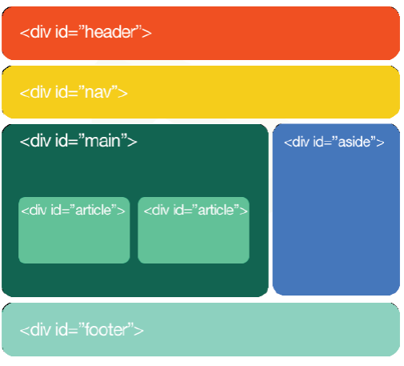
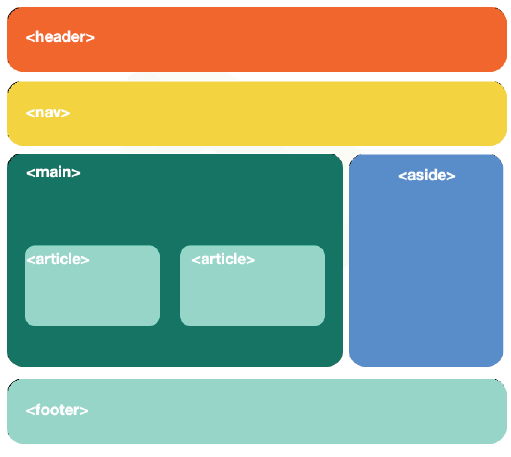

1. ¿Qué fue XHTML? La convergencia entre HTML y XML
A finales de los años 90, el lenguaje HTML 4.01 era extremadamente permisivo: los navegadores interpretaban código lleno de errores sintácticos (etiquetas sin cerrar, mayúsculas y minúsculas mezcladas, comillas ausentes).
En enero del año 2000, el consorcio W3C publicó XHTML 1.0 (Extensible Hypertext Markup Language). Su objetivo fue reformular HTML aplicando las reglas sintácticas estrictas de XML, permitiendo integrar tecnologías como MathML (fórmulas matemáticas) y SVG (gráficos vectoriales).
Las declaraciones DTD obligatorias en XHTML 1.0:
<!-- XHTML 1.0 Strict: No tolera etiquetas de presentación ni atributos obsoletos -->
<!DOCTYPE html PUBLIC "-//W3C//DTD XHTML 1.0 Strict//EN"
"http://www.w3.org/TR/xhtml1/DTD/xhtml1-strict.dtd">
<!-- XHTML 1.0 Transitional: Modo transicional con soporte de estilos en línea -->
<!DOCTYPE html PUBLIC "-//W3C//DTD XHTML 1.0 Transitional//EN"
"http://www.w3.org/TR/xhtml1/DTD/xhtml1-transitional.dtd">Además, la etiqueta <html> exigía declarar el espacio de nombres XML: <html xmlns="http://www.w3.org/1999/xhtml" lang="es" xml:lang="es">.
Las 5 reglas sintácticas de oro de XHTML:
- Minúsculas obligatorias: Todas las etiquetas y nombres de atributos deben escribirse en minúsculas (p. ej.
<body>, no<BODY>). - Cierre obligatorio de todos los elementos: Los elementos normales deben llevar su etiqueta de cierre (
<p>...</p>) y los elementos vacíos deben cerrarse sobre sí mismos con una barra final (p. ej.<br />o<img src="..." alt="..." />). - Anidamiento riguroso: Las etiquetas deben cerrarse en el orden inverso al que se abrieron (prohibido cruzar etiquetas como
<b><i>texto</b></i>). - Comillas obligatorias en todos los atributos: Todos los valores deben encerrarse entre comillas dobles (p. ej.
class="destacado", noclass=destacado). - Prohibición de atributos booleanos minimizados: Los atributos sin valor deben declararse explícitamente asignándose su propio nombre (p. ej.
checked="checked"odisabled="disabled").
2. La Gran Bifurcación: Por qué fracasó XHTML y nació HTML5
El W3C quiso llevar la pureza de XML al extremo diseñando XHTML 2.0, el cual rompía totalmente la compatibilidad con todas las páginas web previas.
Además, el procesamiento XML puro provocaba el temido "Yellow Screen of Death": si una página web tenía una sola etiqueta sin cerrar o un símbolo & sin escapar, el navegador se negaba a mostrar la web entera, presentando una pantalla amarilla de error.
Para la Web real de millones de páginas comerciales y usuarios cotidianos, este enfoque era insostenible.
En 2004, ingenieros de Apple, Mozilla y Opera crearon el WHATWG (Web Hypertext Application Technology Working Group) para diseñar un estándar basado en la realidad de la Web:
- "Don't break the Web": Compatibilidad absoluta hacia atrás.
- Plataforma de aplicaciones: Vídeo nativo, almacenamiento local, APIs interactivas y formularios avanzados.
- Tolerancia de errores estandarizada: Especificar cómo deben reaccionar los navegadores ante fallos de sintaxis.
Este proyecto se convirtió en la base de HTML5.
La Unificación: WHATWG HTML Living Standard (2019 - Presente)
En mayo de 2019, el consorcio W3C y el WHATWG firmaron un acuerdo definitivo: el W3C reconoció al WHATWG como el organismo rector y unificó sus esfuerzos bajo un único estándar continuo: el WHATWG HTML Living Standard. Ya no existen versiones estáticas fijas (no habrá un "HTML6"); HTML es ahora una especificación viva que evoluciona de manera fluida y consensuada entre todos los navegadores.
3. Sintaxis en HTML5: Flexibilidad técnica vs. Buenas Prácticas
A nivel técnico, el motor de análisis sintáctico de HTML5 es extraordinariamente flexible (permite omitir comillas en atributos simples o no cerrar etiquetas de elementos vacíos). Sin embargo, la industria del desarrollo web moderno exige escribir código limpio y disciplinado (estilo XHTML):
| Característica | Permitido por el parser HTML5 | Buena Práctica Profesional (Industria / React / Vue) |
|---|---|---|
| Doctype | <!doctype html> (insensible a mayúsculas) |
<!DOCTYPE html> en mayúsculas al inicio de la línea 1. |
| Minúsculas / Mayúsculas | <DIV> o <div> son interpretados igual |
Siempre minúsculas: <div class="menu">. |
| Comillas en atributos | <input type=text> funciona si no hay espacios |
Siempre con comillas dobles: <input type="text">. |
| Elementos vacíos (void) | <img src="..."> (la barra /> es opcional) |
En HTML5 puro es habitual escribir <img src="..." alt="...">; en entornos con compiladores JSX/React se escribe <img src="..." alt="..." />. |
| Atributos booleanos | <input type="checkbox" checked> |
Se utiliza la forma booleana moderna limpia: required, disabled, checked. |
4. Comparativa Visual: Estructura HTML4 frente a HTML5
La gran aportación de HTML5 al desarrollo de software fue dotar al código de significado semántico intrínseco:
HTML 4: Maquetación mediante <div> (Divitis)

Estructura genérica dependiente de identificadores arbitrarios sin semántica universal.
HTML5: Estructura Semántica Estándar

Estructura semántica nativa reconocida inmediatamente por motores de búsqueda y lectores accesibles.
El elemento <hgroup> en la especificación actual de WHATWG:
El elemento <hgroup> permite agrupar un título principal (<h1> a <h6>) con uno o varios párrafos que funcionan como subtítulo, epígrafe o eslogan de la sección:
<hgroup>
<h1>Lenguajes de Marcas</h1>
<p>Fundamentos del Desarrollo Web y Gestión de la Información</p>
</hgroup>5. Referencias Oficiales y Recursos de Aprendizaje
Para consultar la referencia canónica de cada elemento o validar documentos conforme a los estándares de la industria:
WHATWG HTML
La especificación viva oficial mantenida por los desarrolladores de navegadores.
Ver estándar WHATWGMDN Web Docs
La mejor guía de referencia, tutoriales y compatibilidad de navegadores mantenida por Mozilla.
Documentación MDNValidador W3C
El servicio oficial Nu Html Checker para auditar la validez sintáctica de tus documentos.
Abrir Validador W3C